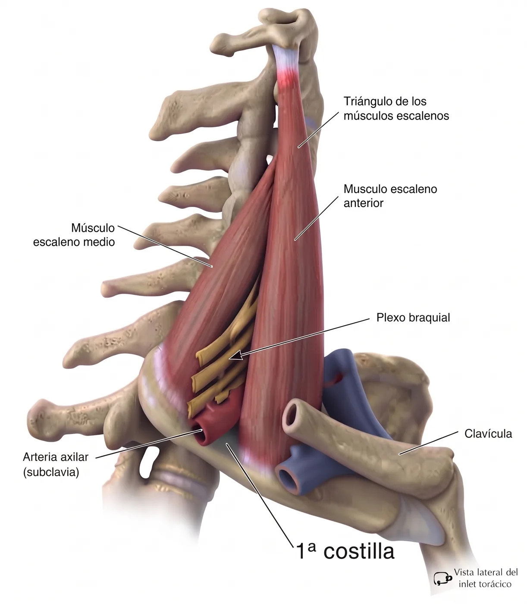
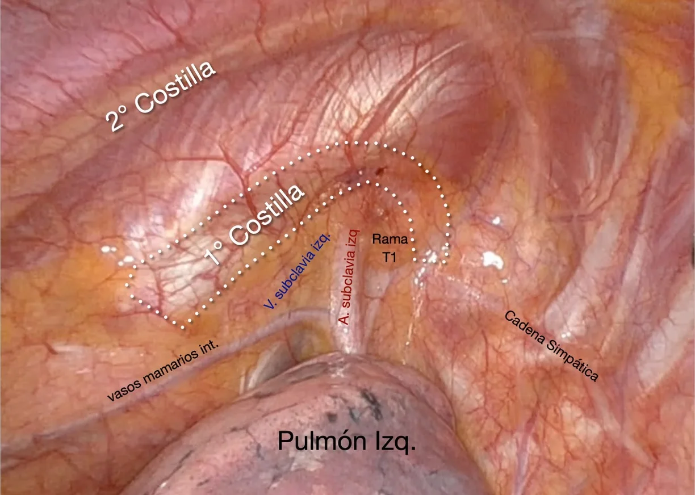
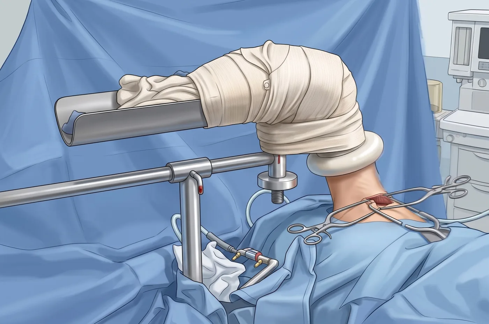
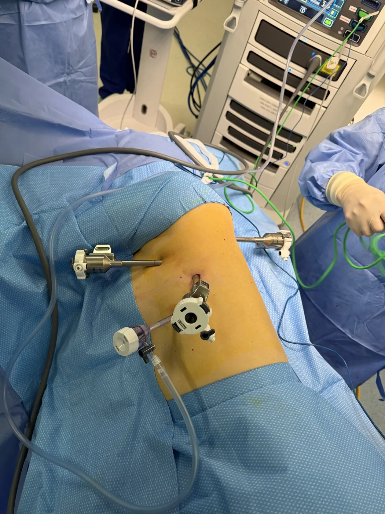
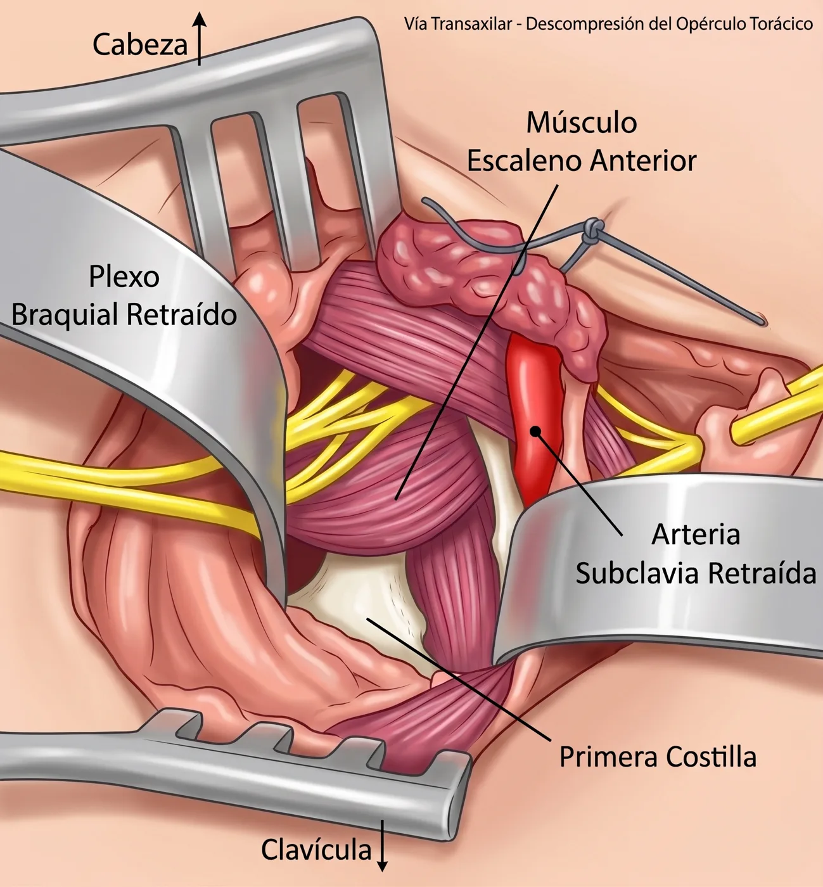

04 · Tratamiento
Manejo multidisciplinario: kinesiología y descompresión de las estructuras vasculonerviosas
Un manejo multidisciplinario
El síndrome del opérculo torácico se trata en equipo: cirugía torácica, traumatología, fisiatría y kinesiología, neurología, cirugía vascular y radiología intervencional. Más que el tipo de compresión, lo que ordena el tratamiento es la urgencia con que hay que resolverla.
Resolución urgente · arterial y venoso
Restablecer el flujo y descomprimir sin demora
Cuando la estructura comprimida es un vaso, el riesgo es trombosis, embolia o isquemia, y el plan se define en conjunto con cirugía vascular.
- Arterial: con dilatación de la subclavia sin complicaciones basta la descompresión y vigilancia. Con aneurisma, trombosis o embolias distales se evalúa además la reparación vascular —reconstrucción arterial, tromboembolectomía o bypass— en el mismo plan quirúrgico.
- Venoso: de manera similar al arterial, si solo existe compresión, sin complicación vascular, se procede a la descompresión quirúrgica. Cuando estamos frente a una trombosis venosa secundaria (síndrome de Paget-Schroetter) corresponde plantear la anticoagulación, venografía y trombólisis farmacomecánica dirigida por catéter, seguidas de descompresión quirúrgica precoz. Tras la resección de la costilla, una parte de los pacientes necesita venoplastía con balón para completar la permeabilidad.
Resolución escalonada · neurogénico
Kinesiología primero, cirugía si no basta
Sin riesgo vascular, el tratamiento avanza por escalones y la cirugía se reserva para quien no responde.
- 1. Terapia física: masoterapia y ultratermia, ejercicios cervicales y elongación de los escalenos, fortalecimiento del trapecio y de la cintura escapular, corrección postural y ergonomía, analgesia.
- 2. Bloqueo con toxina botulínica en casos seleccionados, como puente y como prueba de respuesta.
- 3. Descompresión quirúrgica tras varios meses de tratamiento bien realizado sin control de los síntomas, o antes si hay déficit neurológico progresivo.
Por qué se reseca la primera costilla
La primera costilla es el piso común de los dos primeros espacios del opérculo: sobre ella se apoya el triángulo interescalénico, donde pasan el plexo braquial y la arteria subclavia, y entre ella y la clavícula queda el espacio costoclavicular, por donde pasa la vena. En ella se insertan además los escalenos anterior y medio. Es el único elemento fijo y rígido que participa en los dos espacios donde se produce la mayor parte de las compresiones.
Resecarla casi completamente, desde la unión costoesternal hasta cerca de la apófisis transversa, junto con la desinserción de los músculos escalenos, abre el opérculo y elimina la compresión del plexo, la arteria y la vena, sea cual sea la variante. Por eso es la operación común a las tres formas del síndrome y la que ofrece una descompresión definitiva. A la resección asociamos además la liberación (lisis) de las adherencias que la inflamación repetida por el traumatismo crónico va dejando alrededor del plexo, la arteria y la vena.

Las vías quirúrgicas
La primera costilla puede resecarse por encima de la clavícula, por la axila o desde el interior del tórax. Cada vía tiene su lugar; la diferencia principal está en cómo se ve la costilla y cuánto hay que manipular el plexo braquial para llegar a ella.
| Vía | Incisión | Qué permite | Plexo braquial | Cuándo se prefiere |
|---|---|---|---|---|
| Supraclavicular / infraclavicular | Una, sobre o bajo la clavícula | Reparaciones arteriales o venosas, neurólisis del plexo, resección de costillas cervicales y bandas cervicales | Se expone y se moviliza directamente | Costilla cervical, lesión vascular que reparar |
| Transaxilar (Roos) | Una, en la axila | Resección de la primera costilla y escalenectomía parcial; versión videoasistida descrita | Se retrae para exponer la costilla | Vía clásica del neurogénico y del venoso sin anomalías asociadas |
| Mínimamente invasiva transtorácica (VATS / RATS) | Tres puertos de 8 mm en el costado | Resección completa de la primera costilla, desarticulación costoesternal, sección de los escalenos y lisis de adherencias del plexo y los vasos, bajo visión magnificada | Se ve desde abajo; no se retrae ni se manipula | Compresión por primera costilla o escalenos, en las tres variantes |
La técnica
Resección robótica de la primera costilla intratorácica
Desde el interior del tórax, el opérculo se ve de frente y completo. La primera costilla, los escalenos, la vena y la arteria subclavia y el plexo braquial aparecen ordenados sobre la costilla, en un campo limpio, sin que haya que retraer ni traccionar ninguno de ellos para llegar a la zona de compresión. A esa exposición natural la plataforma robótica suma todas sus ventajas, para lograr como resultado una descompresión completa y controlada, con el máximo de seguridad para las estructuras neurovasculares y con la eficiencia de un abordaje mínimamente invasivo.
01
Reconocimiento directo de las estructuras
Costilla, escalenos, vasos y plexo a la vista, en su orden anatómico, sin retracción.
02
Visión 3D magnificada
Profundidad y detalle para disecar junto a la vena, la arteria y el plexo con margen de seguridad.
03
Instrumentos articulados y sin temblor
Movimientos precisos en un espacio reducido, con la estabilidad de la consola.
04
Mínima invasión, máxima eficiencia
Tres puertos de 8 mm en el costado, sin incisión en el cuello ni en la axila, y una recuperación más rápida.

Comparativa
Abordaje transaxilar vs. resección robótica transtorácica
Transaxilar
RATS transtorácica
Abordaje

Una incisión en la axila, entre el pectoral mayor y el dorsal ancho. La costilla se alcanza desde fuera, a través del vértice de la axila.

Tres puertos de 8 mm en el costado del tórax, con el pulmón excluido. Sin incisión en el cuello ni en la axila.
Visualización

Campo profundo y estrecho, con visión directa limitada; el plexo braquial y los vasos se retraen para exponer la costilla.
El opérculo se ve de frente y completo bajo visión 3D magnificada; costilla, escalenos, vasos y plexo aparecen en su orden anatómico, sin retraerlos.
Cuando la vía robótica es insuficiente
- Costilla cervical o bandas anómalas supraclaviculares o cervicales, que requieren un abordaje supraclavicular complementario.
- Trombosis venosa o arterial activa: trombólisis o trombectomía antes de la descompresión y eventual venoplastía después.
- Aneurisma o dilatación postestenótica de la arteria subclavia, que exige reparación arterial.
Resultados publicados de la vía robótica
Las series robóticas transtorácicas publicadas son de un solo centro, retrospectivas y sin comparación aleatorizada. La de Gharagozloo describe la seguridad de la técnica en el síndrome de Paget-Schroetter; la de Burt la compara con la vía supraclavicular del mismo cirujano y muestra menos parálisis del plexo braquial, menos dolor y menor consumo de opioides en el postoperatorio inmediato.
83
resecciones robóticas por Paget-Schroetter: sin complicaciones quirúrgicas ni lesión neurovascular
Gharagozloo 2019
100 %
de permeabilidad de la vena subclavia a 24 meses de mediana de seguimiento
Gharagozloo 2019
1 % vs 18 %
de parálisis del plexo braquial tras resección robótica frente a la vía supraclavicular (72 vs 51 procedimientos; p = 0,002)
Burt 2020
37,5 vs 81,1
miligramos equivalentes de morfina administrados en el postoperatorio, robótica frente a supraclavicular (p < 0,001), con menor dolor precoz (EVA 4,7 vs 5,2)
Burt 2020
Fuentes
- Burt BM. Thoracic outlet syndrome for thoracic surgeons. J Thorac Cardiovasc Surg. 2018;156(3):1318-1323.e1.
- Burt BM, Palivela N, Cekmecelioglu D, et al. Safety of robotic first rib resection for thoracic outlet syndrome. J Thorac Cardiovasc Surg. 2021;162(4):1297-1305.e1. doi:10.1016/j.jtcvs.2020.08.107
- Gharagozloo F, Meyer M, Tempesta B, Gruessner S. Robotic transthoracic first-rib resection for Paget-Schroetter syndrome. Eur J Cardiothorac Surg. 2019;55(3):434-439.
- Kara HV, Balderson SS, Tong BC, D'Amico TA. Video assisted transaxillary first rib resection in treatment of thoracic outlet syndrome (TOS). Ann Cardiothorac Surg. 2016;5(1):67-9.
- Cook JR, Thompson RW. Evaluation and Management of Venous Thoracic Outlet Syndrome. Thorac Surg Clin. 2021;31(1):27-44.
- Nguyen LL, Soo Hoo AJ. Evaluation and Management of Arterial Thoracic Outlet Syndrome. Thorac Surg Clin. 2021;31(1):45-54.
Preguntas frecuentes sobre el tratamiento
¿Cuándo se opera el opérculo torácico?
En la variante neurogénica, cuando la kinesiología o terapia física bien realizada no controla los síntomas o hay déficit neurológico progresivo. En la vascular, de forma precoz tras completar el estudio necesario.
¿Qué ventajas tiene la resección robótica de la primera costilla?
Se hace desde el interior del tórax por tres puertos de 8 mm: sin incisión en el cuello ni en la axila, con la costilla completa a la vista bajo magnificación 3D y sin retraer el plexo braquial ni los vasos subclavios. Las series publicadas no reportan lesiones neurovasculares.
¿Cuánto dura la recuperación?
La hospitalización dura uno o dos días y la vuelta a la actividad física se produce en tres a cuatro semanas. En la variante venosa se mantiene anticoagulación durante unos meses y se controla la permeabilidad de la vena. El plan se define caso a caso.